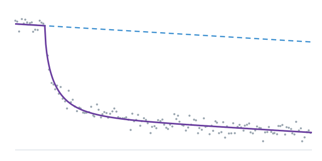
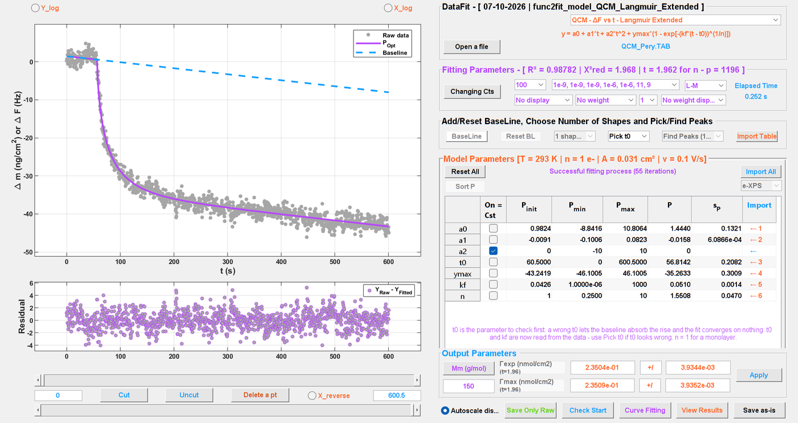

DataFit
Fitting experimental data with physical models
Academic software, free of charge, for Windows and Linux. No MATLAB licence required.

χ2 = Σ [(yi − f(xi; p)) / σi]2
DataFit fits a physical model to measured data and says how far each fitted value can be trusted. About ninety models, from the Nernst equation to host-guest titrations, are ready to use; each one names its parameters, its units and the constants it needs.
A fit, and what it is worth
A curve that goes through the points is not yet a result. DataFit gives, for every parameter, its value and its standard error, and for the whole fit R², the reduced chi-square and the Student factor used for the intervals.
In practice
- Levenberg-Marquardt algorithm, with bounds; any parameter can be held constant
- starting values measured on the data when the model allows it, and a check of the starting point before the fit
- a parameter stopped against a bound is shown as such, and its uncertainty is not reported as if it were free
- residuals plotted under the data; points can be cut or deleted, and the fitting window set with two sliders
- optional weighting by a standard-deviation column

The models
Electrochemistry and surfaces
- Nernstian responses, ac voltammetry, impedance components
- Langmuir and Frumkin adsorption isotherms
- cumulative beta distributions, for the dispersion of formal potentials
- quartz-crystal microbalance: adsorption and injection
Chemistry in solution
- host-guest binding: Job plots, HmGn stoichiometries followed on the host or the guest, stepwise constants, NMR titrations
- π-stacking: nucleation-elongation against concentration or temperature, dimer, n-mer
- linear and exponential regressions
Spectra and devices
- band decomposition on a polynomial baseline: Gaussian, Lorentzian, log-normal, Voigt, ESR derivatives, voltammetric and SEC shapes, for XPS, ESR and spectroelectrochemistry
- organic photovoltaic cells (dark and light J-V curves), field-effect transistors
Companion tools
- Voltammograms: files from Metrohm Autolab, CH Instruments and CVSim read directly; a CV tool that overlays, corrects for ohmic drop, convolutes and deconvolutes, and finds the peaks.
- Diffusion: DOSY windows for spherical and cylindrical species, giving the hydrodynamic radius.
- Data from elsewhere: pasting columns of numbers, a digitizer that reads a curve from a published figure, importers for impedance and for dark/light photovoltaic curves, an XPS elemental table.
- Results: the fit, its parameters and its data written as text and to an Excel workbook.
Checked
Every version is compared with nearly 1,900 recorded cases covering the models, the file readers and the statistics of the fit. A change that moves a result is either a correction, said as such, or a fault.
Getting started
A user guide in French and English describes every window and every control, and what each model expects. The interface is in English. When a model is chosen, DataFit writes a sentence on its delicate parameters: the one that must stay positive, the one better bounded, the one whose starting value decides the fit.
Obtaining DataFit
DataFit is free of charge for everyone, students and researchers alike. It is distributed as 64-bit Windows and Linux executables that need only the free MATLAB Runtime: no MATLAB licence is required. Its licence of use, free of charge, allows it to be installed on as many computers as wished and passed on unchanged; it may not be modified. The demo version needs no formality: everything runs and is shown, nothing is saved. The full version is granted, free of charge too, to users registered with an academic address.
DataFit comes with absolutely NO WARRANTY.
To obtain DataFit, write to the developers at echem-tools@univ-angers.fr.
Reporting a problem: Help ▸ Report a problem... in DataFit prepares a message to the authors — version, system, last error message — that you read, complete and send yourself; the program sends nothing by itself.
Acknowledging DataFit
If DataFit contributes to a publication, a thesis or a funded project (ANR, ERC, a European programme…), the authors would be grateful for a mention, for instance in the acknowledgements:
The fits were carried out with DataFit (O. Alévêque and E. Levillain, MOLTECH Anjou, UMR 6200 CNRS, University of Angers), software free of charge, available on request from echem-tools@univ-angers.fr.
What the programs send, and what they never send: Data, on the home page.